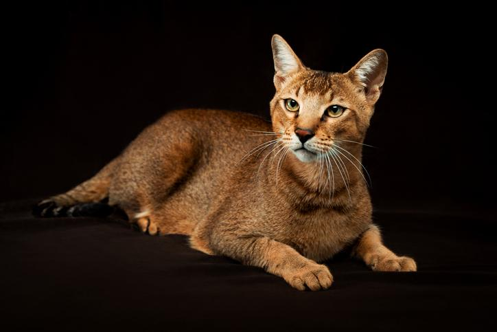

Son originarios del exótico Egipto. Fue allí donde se dieron unos controvertidos programas de cría que cruzaron gatos de selva salvajes, o gatos chaus, con gatos domésticos de pelo corto. Decimos que fue bastante controvertido porque hay mucho debate entre los criadores, que se cuestionan si es ético y oportuno mezclar gatos salvajes con domésticos de forma “forzosa”. Sea como fuere, por medio de esos cruces aparecieron los primeros gatitos chausie, a las orillas del río Nilo. Esta raza fue reconocida en 1995.
Son a menudo confundidos con los gatos abisinios debido a las similitudes que presentan en cuanto a manto y color, sin embargo, los chausies son unos gatos de un tamaño considerable, siendo de talla grande o incluso gigante, pues su peso suele encontrarse entre los 6,5 y los 9 kilogramos, aunque los machos, como suele ser común, son más grandes que las hembras. La altura a la cruz se encuentra entre los 36 y los 46 centímetros. Su esperanza de vida media es de unos 16 años. Entrando ahora en las características físicas del gato chausie, su cuerpo tiene una combinación magnífica entre fuerza y armonía, teniendo una figura esbelta y estilizada, con un cuerpo alargado pero, a la vez, con una musculatura muy desarrollada, sobre todo en el caso de los machos. Sus patas son largas y su cola es también larga y fina. Su cabeza es aplanada y de largo hocico, con unos prominentes pómulos y una expresión dulce. Los ojos son grandes y de forma ovalada, con un color que ha de ser verde amarillento. Sus orejas son grandes, de inserción alta y acabadas en punta, aunque, en general, algo más pequeñas que las del gato abisinio. El manto de un chausie es de pelo corto, aunque algo más largo que el del común de las razas de pelo corto, es denso y apretado, pegado al cuerpo. Los colores del chausie aceptados son el pardo atigrado, el negro, o bien sólido o bien atigrado, y el plateado.

Uno de esos rasgos es su inquietud y su carácter tremendamente activo, siendo un felino con unas altas necesidades de actividad y ejercicio. Por este motivo, no es una buena opción para vivir en espacios cerrados. El chausie es un gato muy independientes, siendo a veces realmente complicado educarlo, pues es bastante testarudo. No obstante, que esto no nos engañe, ya que es un felino muy despierto e inteligente, pues aprende a abrir puertas y ventanas con una asombrosa facilidad. En este sentido, es importante prestar atención y vigilar al gato chausie, puesto que no es nada miedosos, exponiéndose a peligros sin importarle el riesgo que puede estar corriendo. Por otra parte, es un gato muy fiel y cariñoso, cogiéndole mucho cariño a sus compañeros humanos, a los que adora y es muy leal. Eso sí, no se adapta especialmente bien a niños y otros animales.

Realizar mucho ejercicio, que ha de ser vigoroso, estimulante y enriquecedor, de forma diaria. De lo contrario, nuestro gato estará inquieto y puede desarrollar problemas como la ansiedad o la agresividad. Quitando eso, un chausie solo necesitará los cuidados básicos que cualquier otro gato, como son el recibir mucho cariño y el tener una dieta sana y balanceada que cubra sus requerimientos calóricos y nutricionales. También ha de mantenerse en buen estado su salud general, cuidando su pelaje, sus ojos, sus orejas y su boca. Así mismo, dentro de los cuidados del gasto chausie entra el enriquecimiento ambiental, por lo que será imprescindible ofrecerle juguetes variados, rascadores con distintas alturas, etc.

Tienen una salud realmente fuerte. Aun así, no hemos de descuidarlos, tenemos que llevarlos regularmente a visitar al veterinario a fin de realizar chequeos para conocer su estado general de salud. También tendremos que tenerlos vacunados y desparasitados, pues los parásitos, tanto internos como externos, pueden contagiar enfermedades realmente serias a nuestra mascota. Una particularidad de la raza es que en muchas ocasiones los ejemplares macho de chausie son estériles, aunque esto no ha de preocuparnos, puesto que gozará igualmente de una buena calidad de vida y excelente salud si le proporcionamos todos los cuidados que necesita.